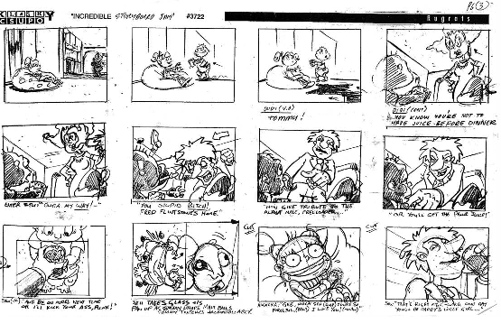

Rugrats Storyboard Jam
Cass Python, 2017-02-09Animators are like people who make websites, their weird. A storyboard jam is a storyboard that is passed around animator to animator, they will add a new part to the story one-by-one. A lot of the storyboard jams can have lewd and off-colour themes. It is said that production crew on shows use storyboard jams to relieve anger and tension while working on a project.
A storyboard jam titled "Incredible" began life around 1998 within the Klasky production crew of Rugrats, according to director/animator of the show, Steve Ressel, he wrote this now-deleted LiveJournal post in c. 2004;
A Storyboard Jam isn't common on shows that allow people to get out frustrations in the actual work, but on cutie kid shows, everyone draws naked women going bonkers on giant cocks in their spare time. Inevitably, through loathing of the project, they start a storyboard jam where a continuous story evolves from artist to artist as they hand around the papers. Everyone gets a turn to do their worst with the characters.
At Klasky, on Rugrats, they started this Jam in 1998 I think. The first page had Angelica being a bitch to Tommy, so Tommy gets her a drink in the kitchen and puts in dog food and draino, then toddles back to Angelica. This is where the story should have heated up, but I saw someone was intervening. I found this lone page yesterday and can't find the rest. When the Jam was handed to me I disgustedly pushed it away, and after seeing it unattended on another artist's desk for 2 days I had the idea to step up the lameness a notch by having Stu come in and be utterly abusive to everyone. The artists who saw my treatment of the characters after their refined, cultured story were getting pissed...
I began the next page (I was on a roll, most people did 3 or 4 panels and I was doing 12 or so in a fervor of home filth) with a close up of Stu's crotch (on model) and then a cut away showing his entire pelvis is in fact two tight and well rounded testicles with a tiny cock dangling from above. Lightening was bouncing around and words appeared saying 'BALLS OF THUNDER!', or something to that effect. After that, the next artists really took it to it's low as Angelica's hands came in to stroke Stu's balls and then incest sex scenes flew all over the pages. I was disgusted, even, when I saw what had become of the comic.
Someone was taking the things between buildings, to dump it on the Thornberry crew when an executive snooty-draws producer saw it, was disturbed, and confiscated the jam... and thus it ended.
(Click to enlarge)

{kind=link}
References
I. Rugrats: "Incredible" (Partially Lost Storyboard Jam; 1998) - The Lost Media Wiki
http://lostmediawiki.com/Rugrats:_%22Incredible%22_(Partially_Lost_Storyboard_Jam;_1998) [archive.is]
II. Kids' cartoons with dirty secrets - Listal
http://www.listal.com/list/kids-cartoons-dirty-secrets [Internet Archive, archive.is]
III. The Secret Rugrats Storyboard! - Newgrounds BBS
https://www.newgrounds.com/bbs/topic/196718 [Internet Archive, archive.is]